Hoe De Reus eruitziet, klinkt en schrijft. Voor iedereen die namens ons iets maakt.
4,9 uit 5Beoordeling van klanten op Google
24 uurNa een aanvraag belt De Reus binnen 24 uur
7 dagenPer week beschikbaar
1Vaste verhuisadviseur, van begin tot eind
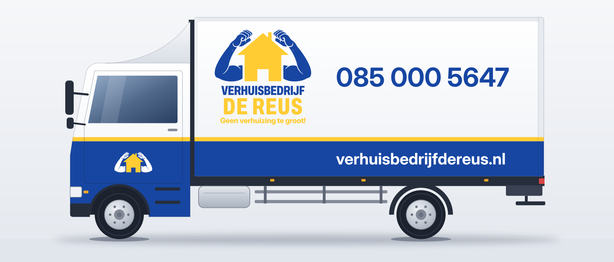
Voorstel belettering
Hoofdstuk 01
Merkverhaal
De Reus doet het zware werk van een verhuizing, zodat u dat niet hoeft te doen. Sterk waar het zwaar is, zorgvuldig met alles wat we optillen.
Geen verhuizing te groot!
De tagline, zoals hij in het logo staat.
Bij De Reus krijgt u één vaste verhuisadviseur, ervaren verhuizers en een heldere offerte vooraf.
Waar we voor staan
Wij nemen particulieren en kleine bedrijven het zware werk van een verhuizing uit handen. Verhuizen hoort niet de zwaarste week van het jaar te zijn.
Ons verhaal: sterk waar het zwaar is
Verhuizen is zwaar werk. Dat gaat over kasten, bedden en dozen die de trap af moeten, maar ook over alles eromheen: de planning, de sleutels, de vraag of alles heel aankomt. Veel mensen zien er weken tegen op. Daar is De Reus voor. Voor een reus is geen verhuizing te groot.
Maar een goede reus is niet alleen sterk. Hij weet ook wat hij vastheeft, zoals een zachte reus: groot en sterk, en toch voorzichtig. Zo werken onze verhuizers. Het zijn vakmensen met jaren ervaring, geen studenten. Ze pakken zorgvuldig in, dragen met beleid en zetten alles netjes neer. Klanten noemen ons in hun reviews netjes, voorzichtig en respectvol.
Wie we zijn
Verhuisbedrijf De Reus heeft zijn hoofdkantoor in Den Haag. Wij verhuizen particulieren en kleine bedrijven, binnen Nederland en van en naar het buitenland. Dit zijn onze diensten:
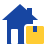
Particuliere verhuizingen
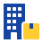
Zakelijke verhuizingen
Nationale verhuizingen
Internationale verhuizingen
Woningontruiming
Tijdelijke opslag
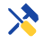
Handymanservice
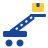
Verhuisliftservice
Kernwaarden
Sterk
Tillen en sjouwen laat u aan ons over.
Zorgvuldig
Wat we optillen, zetten we heel en netjes weer neer.
Betrouwbaar
Wat we afspreken, doen we, op het tijdstip dat we hebben afgesproken.
Eerlijk
Een heldere offerte vooraf en een eerlijk verhaal over wat het kost.
Betrokken
We denken met u mee en blijven vriendelijk, ook als het zwaar wordt.
Bewijspunten
4,9 uit 5 op Google
7 dagen per week beschikbaar
Geen voorrijkosten
Inboedel standaard verzekerd
Eén vaste verhuisadviseur, van begin tot eind
Reactie binnen 24 uur na een aanvraag
Doelgroepen en kernboodschappen
Particulieren
Wie
Huishoudens die verhuizen, dichtbij of verder weg.
Wat ze willen
Spullen die heel aankomen, kosten die niet oplopen en zelf zo weinig mogelijk werk.
Wij doen het zware werk. U houdt het overzicht.
Van inpakken tot uitpakken, ook montage is mogelijk.
Spoedklussen pakken we ook op.
Bedrijven
Wie
Kantoren en kleine bedrijven die verhuizen.
Wat ze willen
Zo weinig mogelijk stilstand, een vaste planning en één aanspreekpunt.
Eén aanspreekpunt, een vaste planning en vakmensen die doorwerken. Zo bent u snel weer aan de slag.
Internationaal verhuizen
Wie
Mensen die van Nederland naar het buitenland verhuizen, of andersom.
Wat ze willen
Zekerheid over de afstand: wie is verantwoordelijk, wat kost het en komt alles heel aan?
Ook over de grens één vast aanspreekpunt en een heldere prijs.
Woningontruiming
Wie
Wie een woning leeg moet opleveren, bijvoorbeeld na een overlijden of bij een verhuizing naar een zorginstelling.
Wat ze willen
Rust, respect voor wat er in huis staat en een woning die op tijd leeg is.
Toon
Extra rustig en tactvol. Geen grapjes, geen haast.
Wij maken de woning leeg, met respect voor wat er staat en voor wie er afscheid neemt.
Hoofdstuk 02
Logo
Ons logo laat in één oogopslag zien wie we zijn: sterke armen om een huis, en een naam die blijft hangen. Gebruik het altijd zoals het hier staat, dan herkent iedereen De Reus meteen.
Opbouw
1234
De armen. Twee gespierde armen in koningsblauw, met de vuisten omhoog. Ze staan voor kracht: het zware werk doen wij.
Het huis. Een goudgeel huis tussen de armen: uw thuis en alles wat daarin zit.
Het woordmerk. VERHUISBEDRIJF in koningsblauw, daaronder DE REUS groter in goudgeel, allebei in Archivo ExtraBold. Het woordmerk is een tekening, geen tekst: zet de naam nooit zelf opnieuw.
De tagline. “Geen verhuizing te groot!” in goudgeel, in Inter ExtraBold. Is het logo smaller dan 160 px of 40 mm, gebruik dan de versie zonder tagline. Het beeldmerk heeft nooit een tagline.
Varianten
PrimairOp wit, mist en de lichtste blauwe tint. Dit is de standaard.
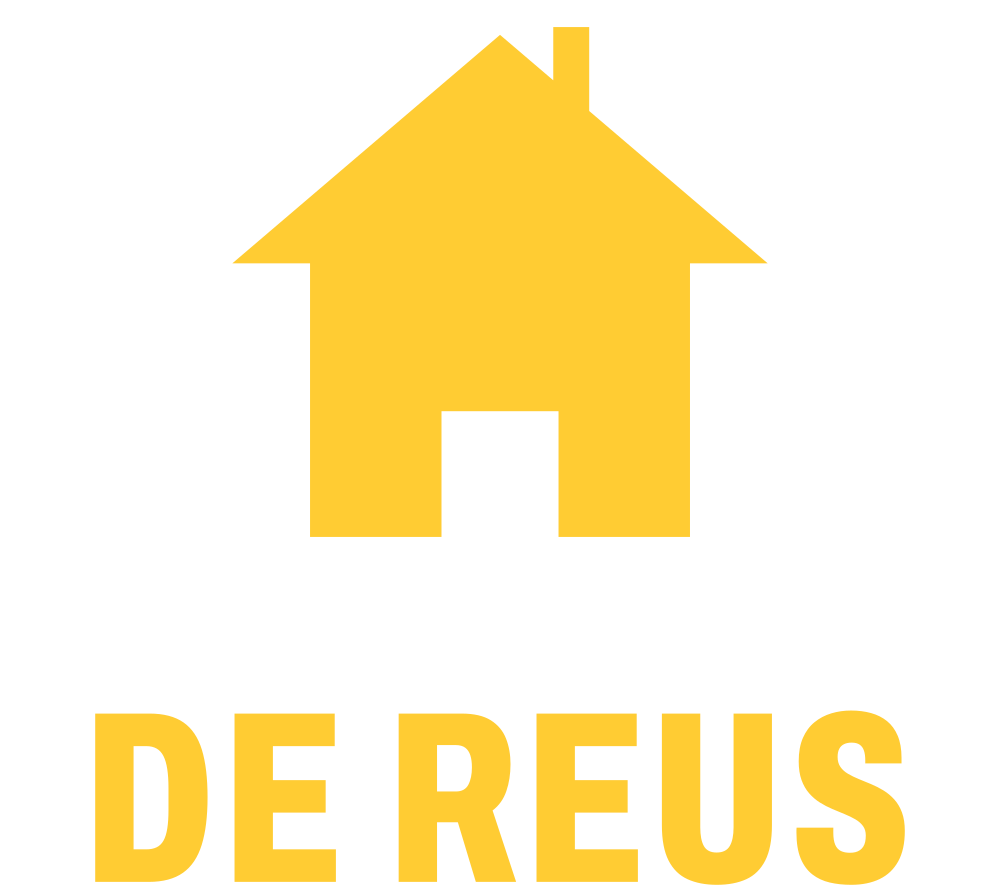
Zonder taglineVoor kleine formaten en plekken waar de tagline al staat.
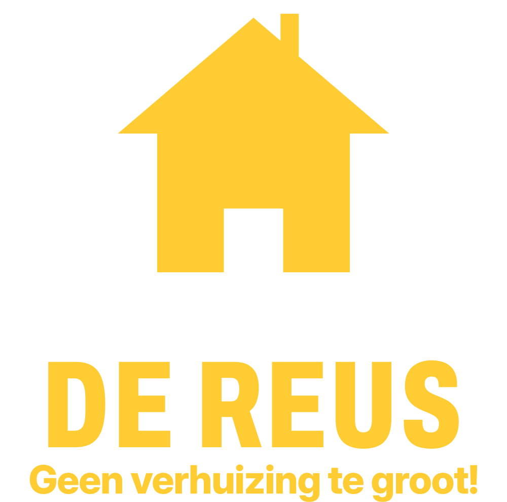
NegatiefWit en goudgeel, voor koningsblauw en diepblauw. Op blauw is dit altijd de juiste versie.
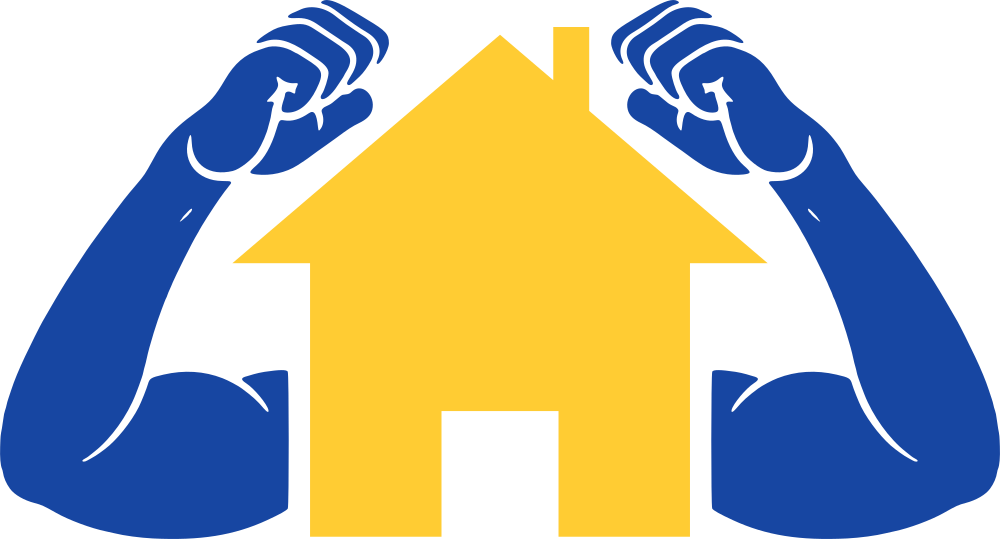
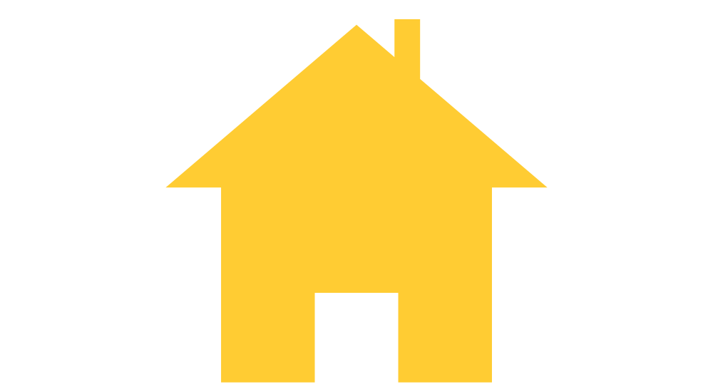
BeeldmerkArmen en huis zonder tekst, licht en negatief. Voor de social avatar, het app-icoon en stickers, waar de naam al ergens anders staat.
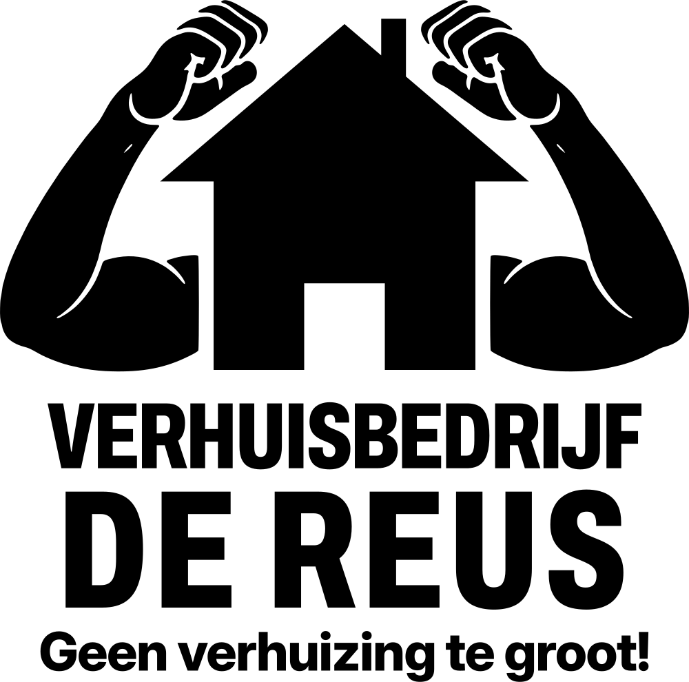
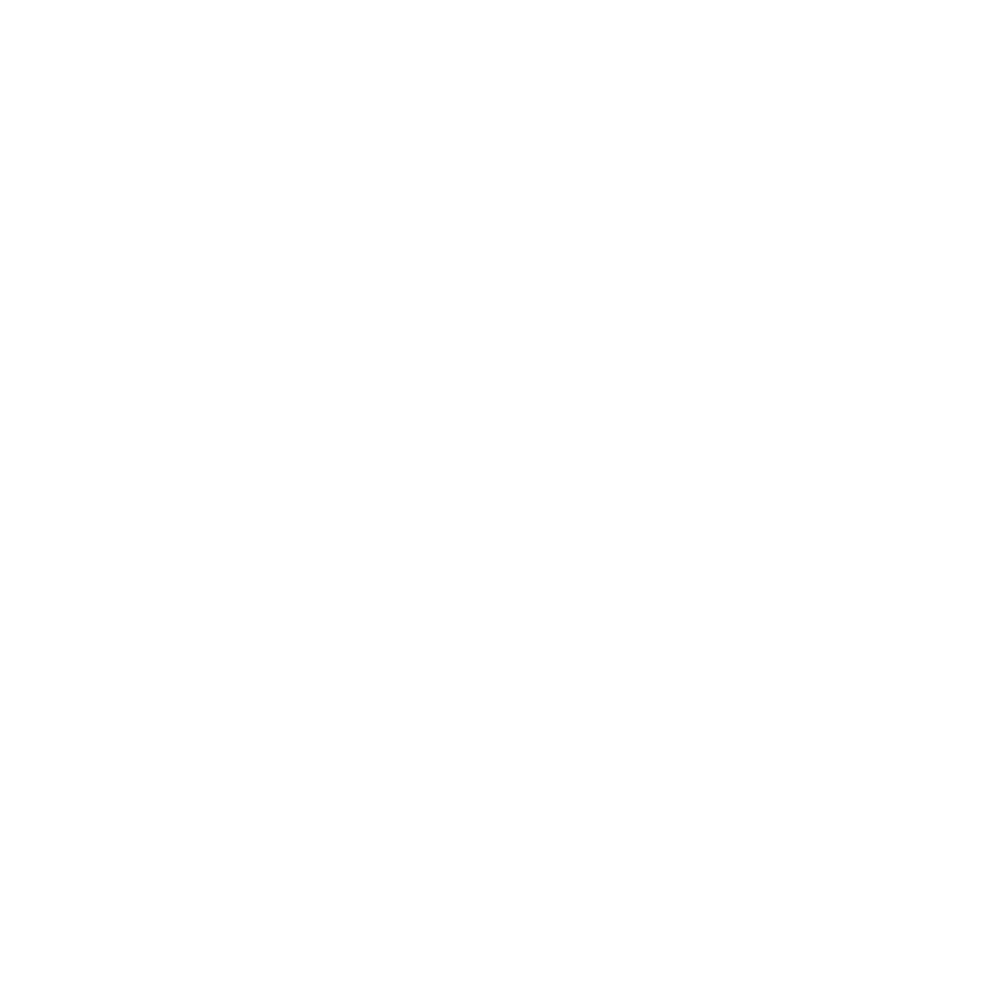
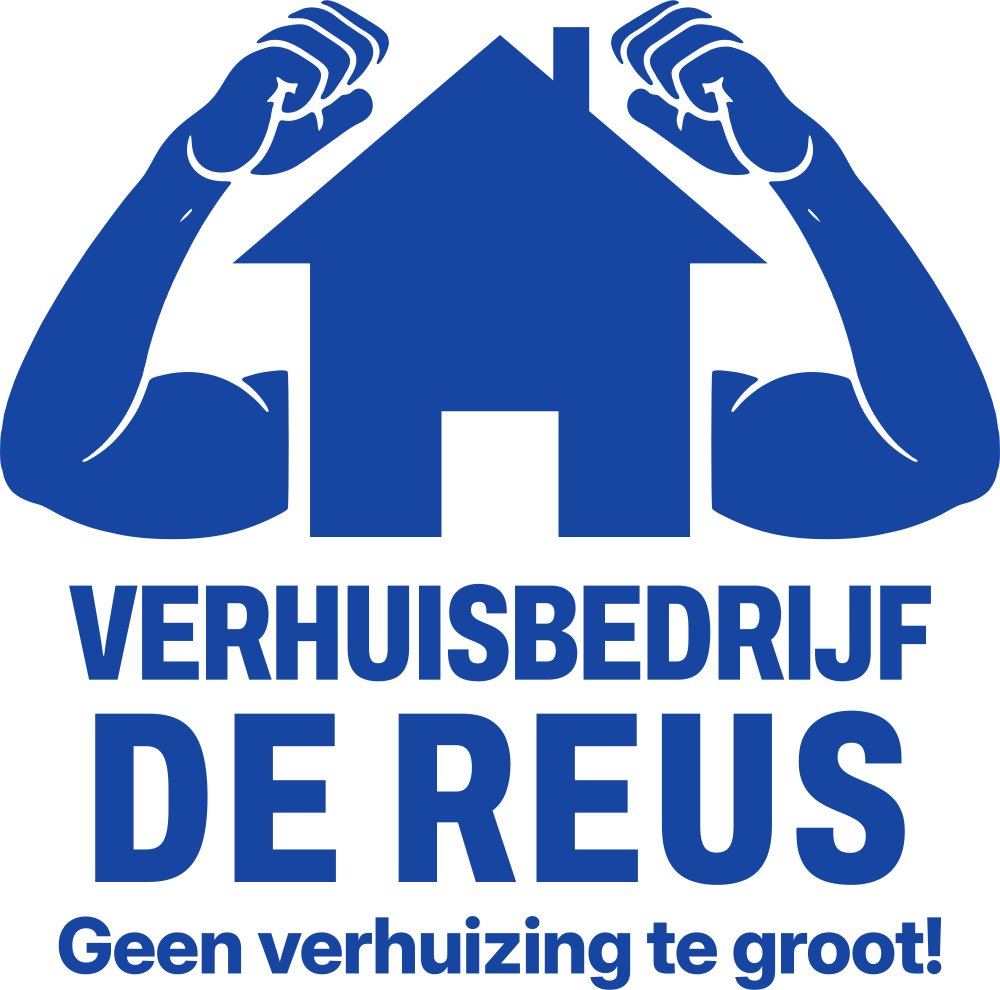
Eén kleurHelemaal zwart, helemaal wit op donker, of koningsblauw op karton. Voor stempels, borduren, graveren en drukwerk in één kleur.
163248
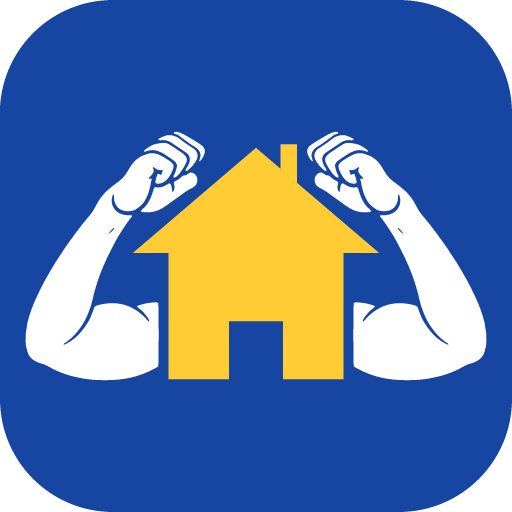
app-icoon
Favicon en app-icoonOnder 48 px loopt het beeldmerk dicht. De favicon is daarom alleen het gele huis op koningsblauw. De versie met armen is voor grote app-iconen en de social avatar.
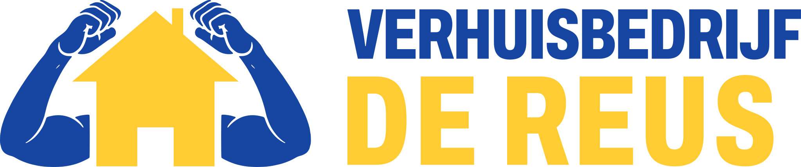
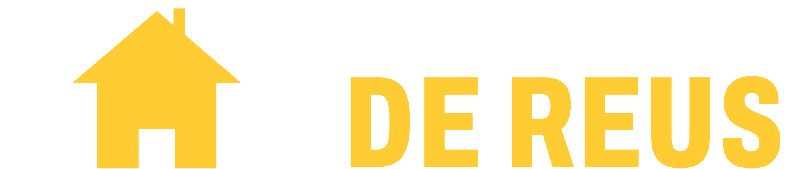
HorizontaalBeeldmerk links, naam rechts, zonder tagline. Alleen waar weinig hoogte is: websiteheader, e-mailhandtekening, achterkant van de bus. Het staande logo blijft het primaire logo. Voorstel, afgeleid van logo 02. Graag uw akkoord.
Vrije ruimte en minimale grootte
xx
Houd rondom het logo minimaal 1x vrij. x is de breedte van de deur in het huis, 11,7% van de logobreedte: bij 200 px ongeveer 23 px, bij 50 mm ongeveer 6 mm. Bij het horizontale logo is x 21,7% van de hoogte.
Variant
Scherm
Druk
Logo met tagline
160 px breed
40 mm breed
Logo zonder tagline
100 px breed
25 mm breed
Horizontaal logo
28 px hoog (134 px breed)
8 mm hoog
Beeldmerk
32 px breed
12 mm breed
Favicon (huis)
16 px
n.v.t.
Onder 160 px valt de tagline weg, onder 100 px gebruikt u het beeldmerk. Voor een vierkante avatar staat het beeldmerk in het midden, met 1x ruimte eromheen.
Wit, mist of de lichtste blauwe tint: het primaire logo.
Koningsblauw of diepblauw: het negatieve logo.
Over een foto: zet het logo op een wit vlak of kaart.
Het primaire logo op blauw: de blauwe armen vallen weg.
Goudgeel: het huis en DE REUS vallen weg.
Direct op een drukke foto, zonder vlak.
Kleuren die niet in het palet staan.
Wat niet mag
Uitrekken. Altijd in verhouding schalen.
Andere kleuren. Alleen de varianten uit dit hoofdstuk.
Schaduw of effecten. Geen schaduw, gloed, rand of verloop.
Draaien. Het logo staat altijd recht.
Onderdelen verplaatsen. Armen, huis, naam en tagline blijven waar ze staan. Voor een brede plek is er het horizontale logo.
Op een drukke foto. Gebruik een wit vlak.
Verhuisbedrijf De Reus
Naam opnieuw zetten. Gebruik altijd het logobestand, nooit een lettertype.
Bestanden
Elk logo staat in assets/logo-v1-archief/ als SVG en als PNG (2048 px breed, transparant).
Bestand
Variant
Gebruik
dereus-logo
Primair, met tagline
Website, documenten en alles op wit of mist
dereus-logo-zonder-tagline
Primair, zonder tagline
Kleine formaten, plekken waar de tagline al staat
dereus-logo-zonder-tagline-negatief
Zonder tagline, negatief
Kleine formaten op blauw: social, footer
dereus-logo-negatief
Negatief
Op koningsblauw of diepblauw
dereus-logo-1kleur
Eén kleur, zwart
Zwart-witdruk, stempels en formulieren
dereus-logo-1kleur-blauw
Eén kleur, koningsblauw
Karton, flexodruk, één drukgang in blauw
dereus-logo-1kleur-wit
Eén kleur, wit
Borduren en graveren op donker, witte belettering
dereus-logo-horizontaal
Horizontaal, ter goedkeuring
Alleen waar de hoogte beperkt is, vanaf 28 px hoog
dereus-logo-horizontaal-negatief
Horizontaal, negatief
Idem, op koningsblauw of diepblauw
dereus-beeldmerk
Beeldmerk
Social avatar en kleine plekken op licht, vanaf 32 px
dereus-beeldmerk-negatief
Beeldmerk, negatief
Avatar en kleine plekken op blauw
dereus-favicon
Favicon: geel huis op koningsblauw
Browsertab. .ico met 16, 32 en 48 px, losse PNG's, 180 px voor apple-touch-icon, 512 px voor het manifest
dereus-favicon-armen
App-icoon met armen
Alleen grote iconen: 180 en 512 px, social avatar
Drukbestanden (CMYK, PDF) in druk/
dereus-logo · -negatief · -1kleur · -1kleur-blauw
Staand logo
Drukwerk, belettering, textiel
dereus-logo-zonder-tagline · -negatief
Zonder tagline
Briefpapier, offerte, kleine formaten
dereus-logo-horizontaal · -negatief
Horizontaal, ter goedkeuring
Achterkant van de bus, spandoek
dereus-beeldmerk
Beeldmerk
Alleen het beeld
Archief
logo_try-02-crop.png
Origineel uit de kleurproef
Alleen ter referentie, niet gebruiken
logo_try-source.png
Kleurproef met tien combinaties, gekozen is 02
Alleen archief
SVG voor de website en alles wat groot wordt, zoals de bus en werkkleding. PNG voor Word en mailprogramma's. De drukker krijgt de pdf uit druk/, met de CMYK- en Pantone-waarden uit hoofdstuk 03.
De drukbestanden hebben geen ICC-profiel, en Pantone is de dichtstbijzijnde match. Vraag altijd eerst een drukproef.
Hoofdstuk 03
Kleur
Blauw en geel uit het logo maken De Reus herkenbaar, met diepblauw als donkere partner. Blauw draagt, geel valt op.
Merkkleuren
Koningsblauw
Onze hoofdkleur, van de armen en VERHUISBEDRIJF. Voor koppen, links, iconen, blauwe banden en de tweede knop.
Diepblauw
De donkerste stap van koningsblauw, voor de footer, donkere banden en de tekst op de gele knop.
Goudgeel
Het huis en DE REUS. Ons accent: de offerteknop, de sterren bij reviews en één markering per scherm.
De drukwaarden (CMYK en Pantone) zijn omgerekend vanaf het scherm. Leg ze voor de eerste druk naast een Pantone-waaier.
Neutrale kleuren
Inkt
Lopende tekst. Zachter dan zwart, met een blauwe ondertoon.
Grafiet
Titels in kaarten en tekst op lichte knoppen.
Leisteen
Gedempte tekst, zoals bijschriften.
Staalgrijs
Randen van invoervelden.
Zilvergrijs
Decoratieve scheidingslijnen.
Mist
Panelen en afwisselende secties.
Wit
De achtergrond van elke pagina.
Functionele kleuren (alleen scherm)
Fout
Foutmeldingen, altijd met een icoon en tekst erbij.
Succes
Bevestigingen. Het enige groen dat overblijft.
Verhouding
Wit
Mist
Koningsblauw
Diepblauw
Goudgeel
60 licht, 30 blauw, 10 geel. Wit en mist geven rust, blauw draagt de koppen, banden en footer, en geel trekt de aandacht waar het telt. Voelt een pagina geel aan, dan is het te veel.
Regels
Geel nooit als tekst of als heel icoon op wit; een geel accent binnen een blauw icoon mag.Geel op wit is bijna onleesbaar. Ook geen witte tekst op geel.
Op geel staat diepblauw of inkt.Die blijven op geel goed leesbaar.
De offerteknop is goudgeel met diepblauwe tekst.Wijst iemand de knop aan, dan wordt het geel iets donkerder. Geel als knopkleur is er alleen voor de hoofdactie “Offerte aanvragen”. Hooguit één gele knop per blok.
Op blauw staat het negatieve logo.Anders vallen de blauwe armen weg.
Lopende tekst in inkt, niet in blauw.Blauw is voor koppen, links, iconen en vlakken.
Alleen kleuren uit dit palet.Geen verloop van blauw naar geel en geen groene knoppen.
Overgang van de huidige website
De oude kleuren verdwijnen en komen nooit naast de nieuwe blauwen te staan.
Oude kleur
Waar nu
Wordt
Waarom
Marineblauw #054A76
Header, footer, koppen, tekst
Koningsblauw, diepblauw, inkt
Elke kleur krijgt één taak.
Groen #319C5A
Offerteknoppen, offertepaneel
Goudgeel met diepblauwe tekst
Staat niet in het logo en is met witte tekst slecht leesbaar. Groen blijft alleen voor meldingen.
Middenblauw #287EDC
Vinkjes, hover van de header-knop
Koningsblauw, of geel op een blauwe band
Een derde blauw is er één te veel.
Grijzen #E2E8EF, #F0F0F0, #6E6E6E
Tegels, USP-balk, secties
Mist, leisteen
Eén lichte vlakkleur en één leesbaar grijs.
Hoofdstuk 04
Typografie
Twee lettertypes, allebei uit het logo. Archivo voor koppen, net zo stevig als de naam, en Inter voor alles wat u leest of aanklikt.
Lettertypes
Aa
Koppen: Archivo CondensedABCDEFGHIJKLMNOPQRSTUVWXYZ abcdefghijklmnopqrstuvwxyz 0123456789 € m³ & ! ? ë é Uit dezelfde familie als het woordmerk, iets breder gezet zodat lange koppen leesbaar blijven. ExtraBold voor grote koppen, Bold voor tussenkoppen. Gratis via Google Fonts.
Aa
Tekst en interface: InterABCDEFGHIJKLMNOPQRSTUVWXYZ abcdefghijklmnopqrstuvwxyz 0123456789 € m³ & ! ? ë é Het lettertype van de tagline. Voor lopende tekst, formulieren, knoppen en bijschriften, met duidelijke cijfers voor prijzen en telefoonnummers. Gratis via Google Fonts.
Voor drukwerk: Archivo Condensed ExtraBold en Bold, en Inter Regular, SemiBold, Bold en ExtraBold, gratis via fonts.google.com. Voor het web staan ze in assets/fonts/.
Gewichten
Verhuizen
Archivo · 800 Display, H1, H2
Verhuizen
Archivo · 700 H3
Verhuizen
Inter · 400 Lopende tekst
Verhuizen
Inter · 600 Nadruk, labels, prijzen
Verhuizen
Inter · 700 H4 tot H6, knoppen
Typeschaal
De maten groeien mee van telefoon tot computerscherm.
Display
Geen verhuizing te groot!
H1
Het zware werk, met zorg gedaan.
H2
Van inpakken tot uitpakken
H3
Eén vaste verhuisadviseur
H4
Geen voorrijkosten
H5
Standaard verzekerd
Label (H6)
Onze diensten
Intro
Bij De Reus krijgt u één vaste verhuisadviseur. Die denkt met u mee en regelt uw verhuizing van begin tot eind.
Tekst
Onze verhuizers zijn vakmensen met jaren ervaring, geen studenten. Ze pakken zorgvuldig in, dragen met beleid en zetten alles netjes neer. Uw inboedel is standaard verzekerd.
Klein
Gratis en vrijblijvend. Wij bellen u binnen 24 uur.
Extra klein
Verhuisbedrijf De Reus · Lau Mazirellaan 336, 2525 ZJ Den Haag
Knop
Offerte aanvragen
Regels
Koppen als een gewone zin.Alleen de eerste letter en namen met een hoofdletter. Kapitalen alleen in korte displayregels en labels.
Elk lettertype zijn eigen taak.Archivo alleen voor koppen, Inter voor tekst en knoppen. Geen derde lettertype, en het logo nooit natypen.
Groot genoeg.Lopende tekst op 18 px, links uitgelijnd, hoogstens 68 tekens per regel. Nooit kleiner dan 16 px.
Nadruk met SemiBold.Geen cursief en geen onderstreping. Onderstreping is voor links.
Cijfers zoals we ze zeggen.4,9 uit 5, binnen 24 uur, € 250, 08.00 tot 20.00 uur. Prijzen, telefoonnummers en de score in Inter SemiBold of Bold.
Hoofdstuk 05
Toon en schrijfstijl
We praten zoals onze verhuizers aan de deur: vriendelijk, rustig en duidelijk. We maken ons sterk met feiten, niet met grote woorden.
Persoonlijkheid
Sterkniet stoer
Onze naam zegt al dat we sterk zijn. Dat hoeven we niet te roepen.
Zorgvuldigniet omslachtig
We nemen de tijd voor uw spullen, niet voor papierwerk.
Helderniet kortaf
Duidelijk over prijs en planning, ook bij minder leuk nieuws.
Vriendelijkniet amicaal
We zeggen u, maar we klinken als mensen. Geen joviale grapjes.
Vakkundigniet belerend
Gewone woorden. Gebruiken we toch een vakterm, dan leggen we die uit.
Wij zeggen u
We zeggen u en uw, overal: op de website, in offertes, mails en op social media. Over onszelf zeggen we wij of we. Reviews nemen we letterlijk over.
Tagline en afsluiter
Geen verhuizing te groot!
TaglineStaat in het logo en speelt met de naam: voor een reus is geen verhuizing te groot. Schrijf hem altijd zo, met uitroepteken. Dat is de enige vaste uitzondering op onze regel voor uitroeptekens.
Het is een knipoog, geen belofte. De algemene voorwaarden gelden voor particulieren en klein zakelijk, dus nooit: “Geen verhuizing te groot, ook niet voor uw hele hoofdkantoor.”
Sterk in verhuizen. Zorgeloos geregeld.
AfsluiterOnderaan de website, offertes en mails. Nooit direct naast het logo met tagline: één slogan per blok.
Voor campagnes: “Het zware werk, met zorg gedaan.” of “Op De Reus kunt u bouwen.” Ze vullen de tagline aan zonder hem te herhalen.
Schrijfregels
Begin bij de klant.Noem eerst de zorg of de wens, daarna wat wij doen.“Ziet u op tegen het sjouwen? Dat doen wij.”
Wees concreet.Feiten in plaats van mooie woorden: binnen 24 uur, geen voorrijkosten.
Houd het kort.Eén gedachte per alinea, zinnen liefst onder de 20 woorden, in gewone taal.
Schrijf actief.Zeg wie wat doet.“Wij bellen u binnen 24 uur” en niet “U wordt binnen 24 uur gebeld”.
Geen grote woorden.Geen “de beste” of “nummer 1”: laat reviews en feiten het werk doen. Liefst geen uitroepteken; de tagline is de enige uitzondering.
Eén volgende stap.Elk tekstblok eindigt met één duidelijke actie: Offerte aanvragen of Bel 085 000 5647.
Netjes tot in de details.De eerste keer Verhuisbedrijf De Reus, daarna De Reus, altijd met hoofdletter D. Geen gedachtestreepjes. Cijfers met een komma (4,9 uit 5) en “tot” tussen tijden: maandag tot en met zaterdag 08.00 tot 20.00 uur, kort ma t/m za 08.00 tot 20.00 uur. Lees alles na: wie zorgvuldigheid belooft, schrijft foutloos.
Woorden
Woorden die we gebruiken
verhuisadviseur voor uw vaste contactpersoon
verhuizers of vakmensen voor het team op de verhuisdag
zorgeloos, netjes, zorgvuldig, heldere prijs
offerte op maat, gratis en vrijblijvend
Woorden die we niet gebruiken
verhuisexperts en professionals: we zeggen verhuisadviseur of verhuizers.
ontzorgen, bieden, daarnaast en bovendien: schrijf gewoon wat we doen.
Holle woorden en superlatieven: cruciaal, naadloos, de beste, nummer 1.
Beloftes: zo zeggen we het
Onderwerp
Zo schrijven we
Waarom
Verzekering
“standaard verzekerd”, nooit “volledig verzekerd”
De algemene voorwaarden vergoeden tot maximaal € 23.000 per inboedel, met € 500 eigen risico.
Prijs
“een heldere offerte vooraf”, nooit “zonder verrassingen achteraf” en geen vaste eindprijs
De prijs is een all-inprijs of een regieprijs. Meer- en minderwerk wordt verrekend.
Reviews
“4,9 uit 5 op Google”
Met een komma, en altijd met de bron erbij.
Vaste knopteksten
Waar
Tekst
Hoofdknop en offerteformulier
Offerte aanvragen
Contactformulier
Bericht versturen
Telefoon
Bel 085 000 5647
E-mail
Mail ons
Gratis en vrijblijvend zetten we in de zin boven de knop, niet op de knop zelf.
Zo schrijven we, zo niet
Actief: zeg wie wat doet
Zo niet“Laat uw gegevens achter en word binnen 24 uur gebeld door een van onze ervaren verhuisexperts.”Huidige site
Zo schrijven we“Laat uw gegevens achter. Wij bellen u binnen 24 uur.”
Korter en actief. De klant weet meteen wat er gaat gebeuren.
Rustig, met het nummer erbij
Zo niet“Wilt u direct contact of heeft u een spoedklus? Bel ons dan op!”Huidige site
Zo schrijven we“Een spoedklus, of wilt u meteen iemand spreken? Bel 085 000 5647.”
Zet het nummer in de zin en laat het uitroepteken weg. Wie sterk is, hoeft niet te roepen.
Standaardteksten
25 woordenVerhuisbedrijf De Reus uit Den Haag verhuist particulieren en kleine bedrijven, binnen Nederland en van en naar het buitenland. Eén vaste verhuisadviseur regelt de verhuizing.
50 woordenVerhuisbedrijf De Reus uit Den Haag doet het zware werk, sterk en zorgvuldig. Het bedrijf verhuist particulieren en kleine bedrijven, binnen Nederland en van en naar het buitenland. Klanten krijgen één vaste verhuisadviseur, geen voorrijkosten en een standaard verzekerde inboedel. Op Google scoort De Reus gemiddeld een 4,9 uit 5.
100 woordenVerhuisbedrijf De Reus uit Den Haag doet het zware werk van een verhuizing, sterk en zorgvuldig. Het bedrijf verhuist particulieren en kleine bedrijven, binnen Nederland en van en naar het buitenland. Ook voor woningontruiming, tijdelijke opslag, een verhuislift of handyman kunnen klanten er terecht. Iedere klant krijgt één vaste verhuisadviseur, die alles van begin tot eind organiseert. De verhuizers zijn ervaren vakmensen, geen studenten. De Reus werkt met een heldere prijs zonder voorrijkosten, en de inboedel is standaard verzekerd. De offerte is gratis en De Reus belt binnen 24 uur. Klanten geven het bedrijf op Google een 4,9 uit 5.
Hoofdstuk 06
Beeldtaal
Onze beelden laten zien wat we beloven: sterke handen, zorgvuldig werk en spullen die heel aankomen. Zo echt mogelijk, het liefst met onze eigen mensen.
Principes
Echt, niet geposeerd
We laten onze eigen mensen zien: onze verhuizers aan het werk, bij echte klanten. Geen stockfoto's, geen modellen.
Kracht met zorg
Net als in het logo: de kracht (tillen, sjouwen) en de zorg (handen die inpakken, een deken om de kast).
Licht en helder
Daglicht, een rustig beeld en ruimte voor tekst. Blauw en geel alleen via wat echt in huisstijl is, zoals werkkleding of dozen, nooit via filters.
Fotografie
Er zijn nog geen eigen foto's. Tot er een eigen fotoshoot is, gebruiken we liever iconen of het beeldmerk dan stockfoto's.
Eigen fotografie volgtFotografeer alleen wat echt van De Reus is.
Het teamIn werkkleding, ontspannen, in de camera kijkend Homepage, Over ons
De verhuiswagenIn huisstijl, in een herkenbare straat, logo goed zichtbaar Homepage
Zorgvuldig inpakkenHanden die servies inpakken, van dichtbij Particuliere verhuizingen
Beschermen en dragenDeken om een kast, twee verhuizers op de trap Werkwijze
De verhuisadviseurMet de klant aan tafel, samen over de planning Offerte
DetailsHet logo op kleding en dozen Overal als tussenbeeld
Stijl
Daglicht, naturel en licht warm. Geen flits, filters, vignet of zwart-wit.
Echte medewerkers, bezig met het werk of ontspannen in de camera kijkend. Geen duim omhoog.
Van ooghoogte of iets lager, zodat het team groot lijkt.
Veilig tillen, toestemming van klanten, huisnummers onherkenbaar.
Formaat
16 : 9 voor grote beelden bovenaan, 4 : 3 in de tekst, 4 : 5 voor social.
Minimaal 2000 px breed voor grote beelden, 1600 px voor de rest.
Alt-tekst in het Nederlands: “Twee verhuizers van De Reus dragen een kast de trap af”.
Iconen
De iconen volgen het beeldmerk: blauwe armen die een geel huis dragen.
Twee kleuren. De vorm is koningsblauw, één onderdeel goudgeel: wat wij dragen, zoals de doos.
Gevuld, geen lijnen. Details zijn uitsparingen, net als in de vuisten van het logo. Geen schaduw of 3D.
Raster en maat. 48 × 48 px, minimaal 24 px op een scherm en 8 mm in druk. Altijd met een tekstlabel.
Op licht: koningsblauw met goudgeel. Op blauw: wit met goudgeel. Op geel of een foto: alleen koningsblauw. Het gele accent draagt nooit alleen de betekenis.
Vinkje en interfaceiconen
Op licht: koningsblauw met goudgeel vinkje
Op blauw: goudgeel met diepblauw vinkje
Het vinkje is 24 px in lijsten en 32 px bij grote beloftes. Voor pijlen, telefoon en menu gebruiken we lijniconen, nooit door elkaar met de gevulde iconen in één rij.
De mascotte
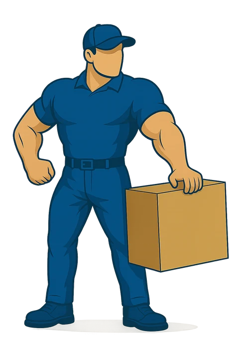
Uw keuze
De huidige website gebruikt een getekende verhuizer als gastheer. Hij past nog niet bij de nieuwe huisstijl: hij heeft de oude kleuren en een andere tekenstijl dan het logo. Wat er met hem gebeurt, beslist u.
a. Afscheid nemen. Het beeldmerk (armen en huis) neemt zijn rol over.
b. Laten hertekenen in de stijl en kleuren van het logo. Daarna kan hij terugkomen als gastheer, bijvoorbeeld naast de knop “Offerte aanvragen”.
Tot u kiest: niet naast het nieuwe logo en niet op nieuw drukwerk, de wagen of werkkleding. Op de huidige website mag hij blijven staan, op wit of mist. Niet vervormen, herkleuren of van nieuwe poses voorzien.
Wel en niet
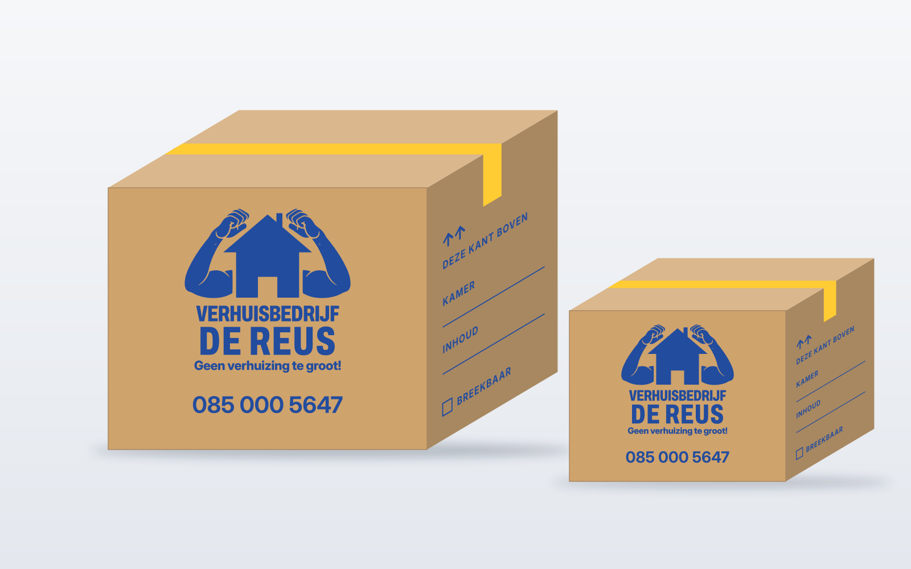
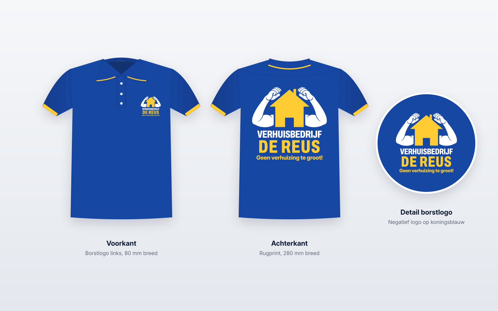
WelVerhuiswagen, verhuisdoos, werkkleding en het beeldmerk.
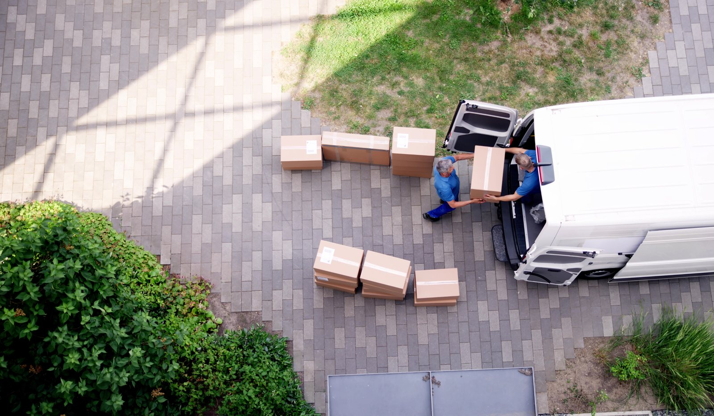
Niet zoGeneriek stockbeeld: onbekende verhuizers en een bus zonder logo. De enige foto op de huidige website.
Wel
Echte verhuizers van De Reus aan het werk, in daglicht.
Handen die zorgvuldig inpakken, van dichtbij.
Het beeldmerk als herkenbaar teken van De Reus.
Eén iconenstijl: gevuld, blauw met één geel accent.
Niet
Stockfoto's met onbekende verhuizers.
Een duim omhoog en lege dozen.
Onveilig tillen, rommel of schade in beeld.
De mascotte naast het nieuwe logo.
Hoofdstuk 07
Toepassingen
Hier ziet u De Reus in de praktijk: op straat, op papier en online. Voor alles wat gedrukt, geplakt of geborduurd wordt: Pantone 293 C en 123 C, eerst gecontroleerd op een waaier, en altijd eerst een proef ter goedkeuring.
Op straat
Verhuiswagen Voorstel beletteringDe bus rijdt de hele dag reclame. Groot logo, telefoonnummer en website, leesbaar vanaf de overkant van de straat.Specificaties: pdf uit druk/, folie zo dicht mogelijk bij de Pantone-kleuren.
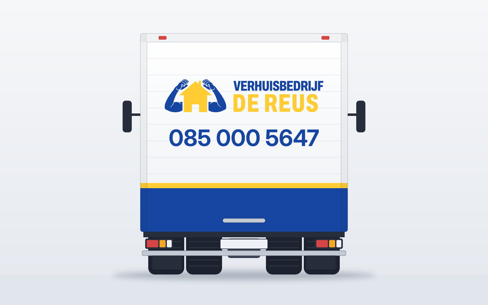
Achterkant Voorstel beletteringHorizontaal logo ter goedkeuringDe achterkant ziet u in de file en voor het stoplicht. Daarom alleen het logo en het telefoonnummer, zo groot als de deur toelaat.Specificaties: pdf uit druk/, folie zo dicht mogelijk bij de Pantone-kleuren.
VerhuisdoosHet logo op de doos, zodat hij tot aan de nieuwe voordeur herkenbaar is.Specificaties: logo minimaal 40 mm breed, in twee kleuren of in één.WerkkledingHet logo op borst of rug. Zo ziet iedereen meteen wie er komt helpen.Specificaties: logo minimaal 40 mm breed, zonder tagline minimaal 25 mm.
Op papier
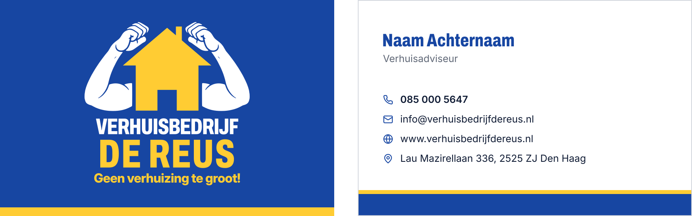
VisitekaartjeHet logo aan de ene kant, de gegevens rustig aan de andere.Specificaties: 85 × 55 mm, plus 3 mm afloop rondom.
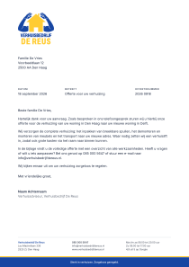
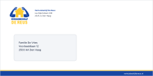
Briefpapier en envelopLogo bovenaan, gegevens in de voet en veel wit: de brief zelf is de hoofdzaak. Op de envelop het logo zonder tagline, met het venster vrij voor het adres.Specificaties: briefpapier A4 · 210 × 297 mm, 3 mm afloop waar kleur tot de rand loopt, logo minimaal 40 mm breed. Envelop DL · 220 × 110 mm, logo minimaal 25 mm breed.
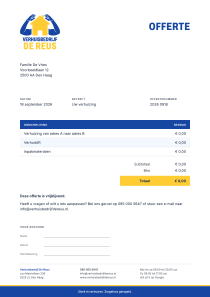
OfferteDe offerte in dezelfde opmaak als het briefpapier: logo bovenaan, een rustige tabel en het totaal op een goudgele balk.A4 · 210 × 297 mm
Online
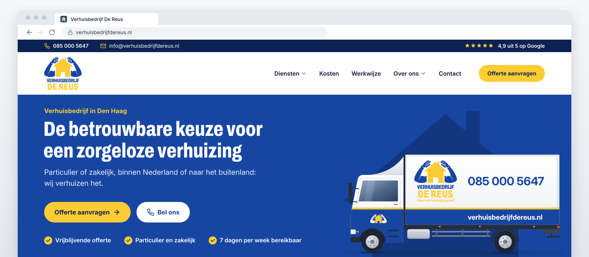
Website-headerHet eerste scherm: logo, één heldere kop en één soort hoofdknop: goudgeel, altijd “Offerte aanvragen”.Specificaties: logo zonder tagline, minimaal 100 px breed. Geel is alleen voor de offerteknop.
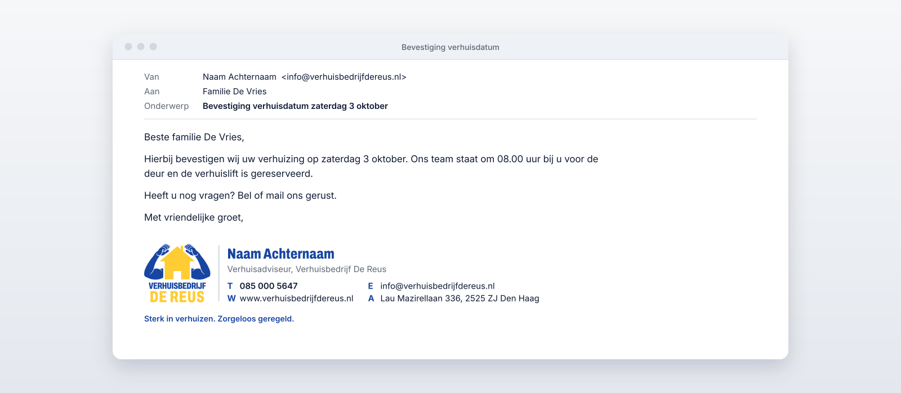
E-mailhandtekeningNaam, functie, telefoonnummer en het logo. Geen banners, geen citaten.Specificaties: logo als PNG, twee keer zo groot opgeslagen als het getoond wordt, zodat het scherp blijft.
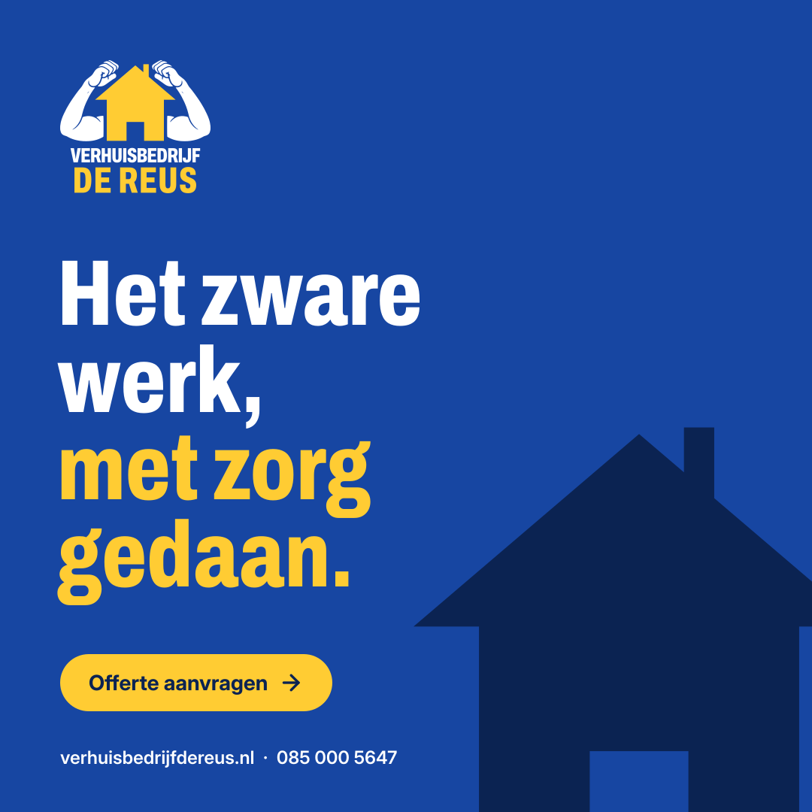
Social postEén boodschap per post, in blauw en geel, liefst met een echte klus of review.Specificaties: 1080 × 1080 px. Logo zonder tagline, minimaal 100 px breed; op blauw de negatieve versie.
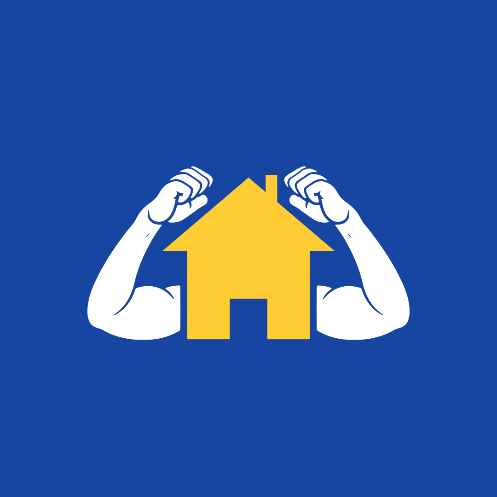
AvatarHet beeldmerk op wit of koningsblauw. Zonder tekst, want die is op dit formaat niet te lezen.Specificaties: 1080 × 1080 px. Beeldmerk in het midden met 1x ruimte rondom, want veel platforms snijden de hoeken rond af.
Hoofdstuk 08
Contact en colofon
Vragen over het merk? Wilt u iets maken met ons logo en weet u niet zeker of het mag? Vraag het ons eerst, dan denken we graag mee.
Bedrijfsgegevens
Handelsnaam
Verhuisbedrijf De Reus
Adres
Lau Mazirellaan 336, 2525 ZJ Den Haag (hoofdkantoor)
Maandag tot en met zaterdag 08.00 tot 20.00 uur Zondag 09.00 tot 17.00 uur
Merkcontact en bedrijfsgegevens (KvK, btw) vullen we aan zodra ze bekend zijn.
Gebruik van dit boek
Dit merkboek is voor iedereen die iets maakt voor De Reus: medewerkers, drukkers, webbouwers en reclamebureaus. Gebruik de bestanden uit deze map en laat elke proef eerst goedkeuren.
Versies
Versie
Datum
Wijziging
1.0
september 2026
Eerste versie: merkverhaal, logo, kleur, typografie, toon en schrijfstijl, beeldtaal en toepassingen.
Bijlage
Voor de webbouwer
Dit deel is voor wie de website van De Reus bouwt of onderhoudt. Hier staan de technische details achter de hoofdstukken hiervoor: contrast, de namen in tokens.css, de knoppen en alle bestanden.
Bestanden en design tokens
Alle kleuren, maten en lettertypes staan als CSS-variabelen in tokens.css. Importeer dat bestand in de website in plaats van waarden over te nemen.
Bestand
Wat het is
index.html
Dit merkboek. Opent in elke browser en is als PDF op A4 te bewaren.
tokens.css
Kleur, typografie, ruimte en vorm als CSS-variabelen.
book.css · book.js
Opmaak en gedrag van dit boek, plus de voorbeeldknoppen (c-*).
assets/logo-v1-archief/
Logobestanden.
assets/fonts/
Archivo Condensed en Inter (woff2) voor het web.
assets/imagery/
Mascotte, foto's en iconen.
assets/mockups-v1-archief/
Mockups van de toepassingen in hoofdstuk 07.
assets/boek/
Verkleinde afbeeldingen die alleen dit boek gebruikt.
Typeschaal
Rootgrootte 16 px. De maten groeien mee van mobiel (375 px) naar desktop (1280 px).
Rol
Token
Maat en lettertype
Display
--text-display
44 tot 72 px · Archivo 800
H1
--text-h1
40 tot 56 px · Archivo 800
H2
--text-h2
32 tot 40 px · Archivo 800
H3
--text-h3
24 tot 28 px · Archivo 700
H4
--text-h4
20 tot 22 px · Inter 700
H5
--text-h5
18 px · Inter 700
Label (H6)
--text-h6
14 px · Inter 700 · kapitalen
Intro
--text-lead
20 px · Inter 400 · 1,5
Tekst
--text-body
18 px · Inter 400 · 1,6
Klein
--text-small
16 px · Inter 400 · 1,5
Extra klein
--text-xs
14 px · alleen juridisch
Knop
--text-button
17 px · Inter 700
Contrast
Doel: WCAG 2.2 niveau AA. Gewone tekst minimaal 4,5 : 1; grote tekst, iconen, randen van velden en focusringen minimaal 3 : 1.